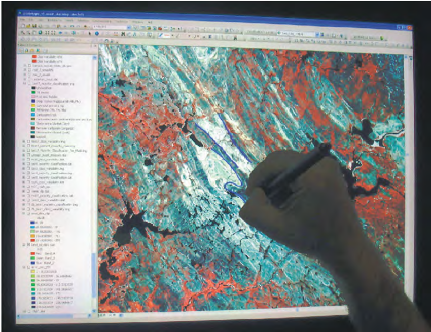

Aerial / Drone Mapping
High-resolution aerial mapping using drones, ensuring centimeter-level precision.
High-resolution aerial mapping using drones, ensuring centimeter-level precision.
Accurate ground control point collection and topographic surveys with GNSS tools.
Multi-resolution satellite imagery for infrastructure monitoring and land classification.
Smart city planning and environmental analysis with tailored GIS consulting.

Digitization of paper maps and raw spatial data into structured GIS formats.
Live visualization of temperature, wind, and rainfall with real-time updates.